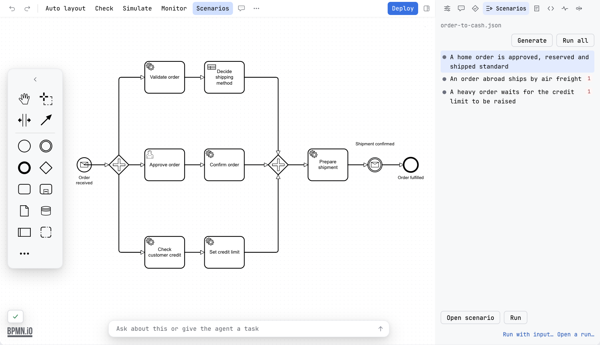
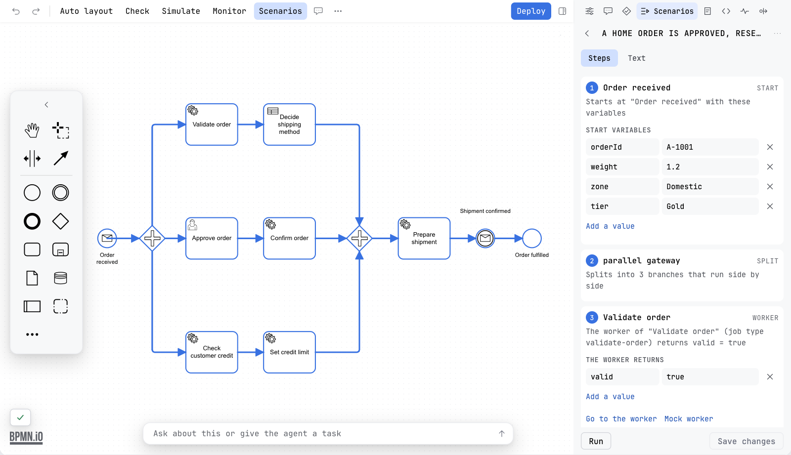
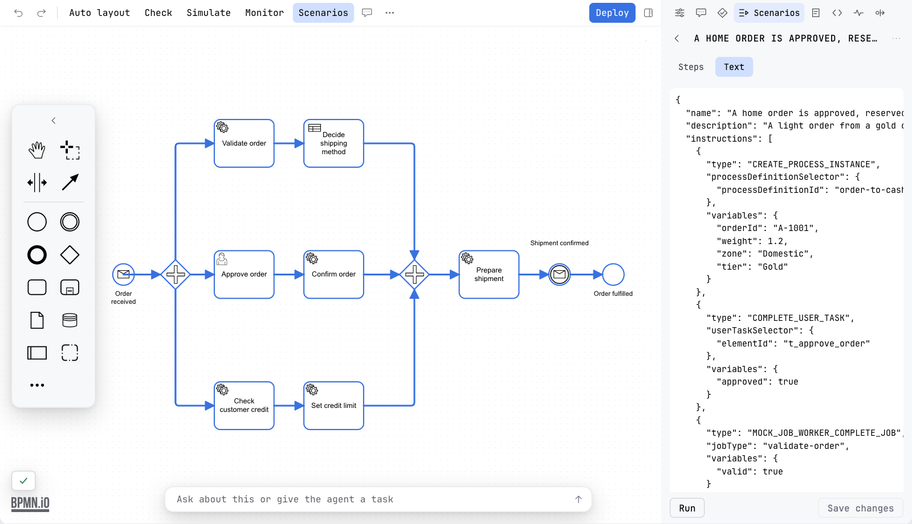
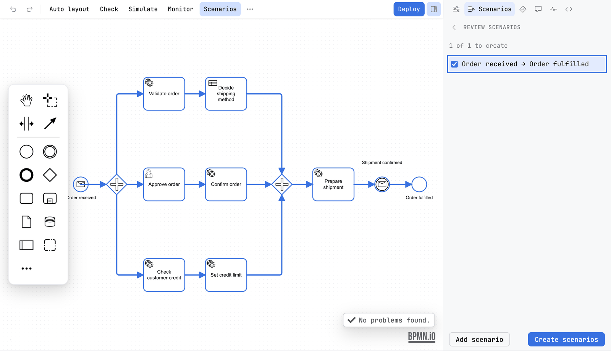
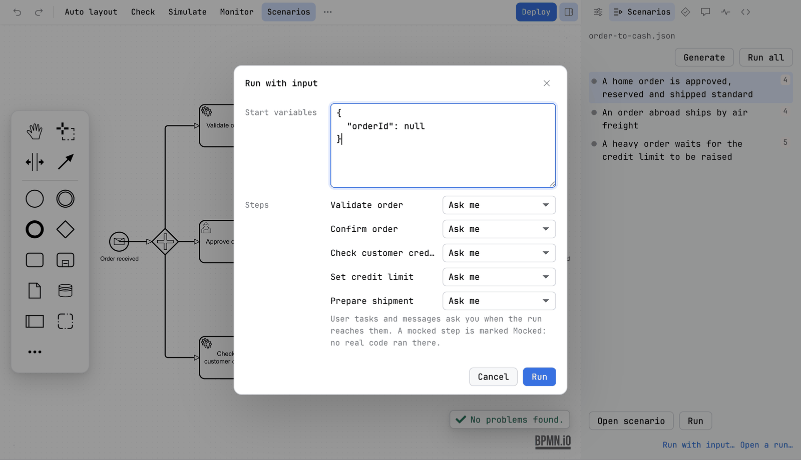

Guide / Test and run
Scenarios
Run the diagram's scenarios on a local engine and see every step: the path taken, and the variables that came in, went out and changed.
What it is
A scenario is one way through a process, with the variables it starts with and an answer for each task. A run starts the process on a real engine, answers its tasks with mocks that you choose, and shows the path it took on the diagram. For each step you see what came in, what went out, and what changed. Scenarios need no build setup. They are stored in Camunda's test-case format, so they are ordinary files that live in Git and run in a pipeline. Flow analysis finds the ways through a diagram, and Generate turns them into runnable ones.
A step that a mock answered carries a Mocked badge. A green run over mocks is not proof that your code works. The badge says so.

Before you begin
- Start an engine on your machine. The example project tells you how.
- Make sure the profile in force has a
deployment.url. See Profiles. - Deploy nothing by hand. A run deploys its own test build and removes it afterwards.
A run deploys a test build, starts instances and answers jobs. So Penstock runs only on an engine that is marked for tests: deployment.forTests: true in penstock.yaml, or an engine on this machine that you confirm once. It asks once per profile in the editor, and once per run in a terminal. It never asks in a pipeline: there you need the forTests mark. Every other engine is refused, by the editor and by the host. See Security and privacy.
Read the Scenarios tab
The Scenarios tab of the sidebar reads the diagram's test-case file, and a diagram whose file has been renamed still finds it by the process id inside. The tab lists the scenarios with their last result. Pro, and Team in a pipeline. Without it the tab says what scenarios are and offers to buy them.
Read and run scenarios in your tool
JetBrains
The tab is beside the canvas, so the path is drawn on the diagram while the panel lists the steps. The test-case file also runs in the IDE's own test runner: open it and press the green triangle in the gutter next to a scenario, or right-click the file or a folder. The Run window shows a test tree, pass or fail, and the log. See Tests in the IDE.
VS Code
The tab is beside the canvas, so the path is drawn on the diagram while the panel lists the steps. The test-case files also run in the Testing view, under a controller called Penstock scenarios, with one node for each diagram and one for each test case. Run a node there. Pro. A result for each case, a line for each step and the trace are in the Output panel, channel Penstock Test Runs. Open run on the diagram on a test case shows its path on the diagram. See Troubleshooting in VS Code.
Command line
Not available on the command line. The command line has no editor and so no Scenarios tab. penstock scenarios run does the same work on a whole project and prints the outcome of each case.
Open a scenario
The list shows one row for each scenario, with a dot for its last result and, when the file has a mistake in it, a number of problems. Click a row to select it. The arrow keys, Home and End move through the list, and Enter opens the scenario.
- Select a scenario and press Open scenario, or double-click it. The tab changes to that scenario. A row under the tabs names it and has a ‹ back to the list.
- Read the steps. Each one is numbered, in the order the process takes them, and named in plain words: Starts at Order received with these variables, A person completes Approve order, Evaluates the decision shipping-method, The process ends at Order fulfilled. The same numbers are drawn on the diagram, so a step and its place on the canvas are the same thing. Click a step to select its element, or select an element to find its step. An element the scenario does not pass says That element is not on this scenario's path.
- Under a step, read what it carries: the start variables, what a worker returns, what a person completes a form with, what a message carries, and the variables that must be set at the end.
- Switch from Steps to Text to read the scenario as it is written in the file.
- Press Run to run this one scenario. While it runs the button says Stop.
A step offers the shortcuts that belong to it, as links under its text.
| Link | On which step | What it does |
|---|---|---|
| Go to the worker | A step that a worker runs | Opens the code that runs it. See Code links. |
| Show the decision rule | A business rule task | Opens a view of the rule that matches, one level deeper in the tab, with ‹ back to the steps. |
| Open the decision | A business rule task | Opens the decision file at that decision. If the project has no decision with that id, it says so. |
| Go to the form | A user task with a form | Opens the form file. If the project has no form with that id, it says so. |
| Wrong way? Fix the conditions | A gateway | Shows the conditions on the way out. When the values of the scenario would take another way than the scenario says, they are shown at once. |
Change a scenario
The values under a step can be edited: add or remove a variable, change a value. Editing a scenario is part of Pro. Without it the values are read-only and say so. A gateway condition that is wrong is fixed from the step that holds it. That change is made in the diagram, it can be undone there, and every scenario is planned again. A change to a scenario that is in the file is kept in the tab until you press Save changes, which writes it to the file.
After a run
Once a scenario has run, its view shows the plan against what happened. The line above the steps says The run matches the steps of the plan. or The run differs from the steps of the plan in 2 places. When the scenario asserts variables at its end, it says the steps of the plan and the variables asserted at its end instead. A step that differs says how: planned, but it did not run, ran, but the scenario did not plan it, expected approved, took rejected at a gateway, or amount: expected 150, got 100 for a variable. The table of the run is in the run panel, described under Running scenarios.
If the sidebar is a drawer and you close it while a scenario is open, the bar it leaves has ‹ and › to go to the previous and the next step, and says which step you are on, for example Step 3 of 7. The diagram keeps showing that step.


Generating scenarios from the diagram
Generate in the Scenarios tab does not write files. It opens a review over the diagram: the scenario you are looking at is drawn on the canvas with its steps numbered and the flows between them, and the steps are listed beside it in plain words, with the value each step passes on. A value can be edited, and a gateway condition that cannot be right is fixed from the step that holds it. Every change plans the scenarios again, so the drawing and the list always agree. Nothing reaches the file until you press Create scenarios.
A scenario already in the file is kept as it is, and its box is ticked and cannot be unticked, so generating never loses work. A way the process takes that the data cannot choose, such as a gateway whose conditions need something no variable can decide, is listed with a note saying so and is not offered for writing.
The same view opens a saved scenario, so what a scenario does can be read before it is run. After a run it shows the plan against what actually happened, step by step.
Add scenario plans one scenario by hand, and for a process that starts on a message, a timer or a signal it asks which start event to begin from. The process instance is then started at that event directly, so the first steps of a process that waits for something are still covered. A start kind Penstock cannot express as a scenario is said in the review rather than left out quietly. penstock scenarios generate behaves the same.

Running scenarios
- Press Run all, or click one scenario. The engine the profile in force names runs the test cases step by step, and stops at every step left to ask.
- Watch the diagram. Completed steps turn green, the step that failed turns red, the step it is waiting at turns blue.
- Read the table: Step, State, In, Out, Changed. Click a row to select the element. Select an element to see its row.
A step can be answered by the real worker, or by a mock: complete it, throw a BPMN error, fail a number of times and then complete, or ask. A timer can be made to fire at once. Each step a mock answered carries a Mocked badge on the canvas, and the table under the run says what each step received, sent and changed, and where each value came from.
Every test case is checked against the Camunda test-case schema before the run starts. A case that lacks what the schema requires, such as an assertion with no processInstanceSelector or an instruction with a property the schema does not allow, is not run and says what it lacks.
A run never touches the definitions you deployed. It builds a copy whose ids are prefixed with penstock.<run>., every process, decision, form and the calls between them, deploys that, and removes it afterwards, so what is left on the engine is what you deployed and the process id you start is the one you deployed.
Where the values come from
On Camunda 7 the engine keeps a full history, so the table is exact. On Camunda 8 the engine keeps no variable history. The path is exact. What a mock received and sent is known. Decisions are read from the engine. Everything else is the difference between two readings, attributed to the stretch between them, not to one step. The panel says which.
Run with input
Use it to try a process by hand.
- Press Run with input…. A dialog called Run with input opens, sized to what it holds.
- Type the Start variables as JSON. They are filled in from the variables the diagram reads.
- Under Steps choose what happens at each service task: Ask me, Complete (with variables), Throw error, Fail, then complete, or Real worker. For a timer choose Fire now or Wait for it.
- Press Run.
- The run stops at every step left to ask. The panel says Waiting at Charge card for the job charge-card, shows what was received, and asks what to send. Type the variables, or an error code, and answer. For a user task, complete it. For a message, press Correlate.
Open run… shows the path and the steps of an instance that already exists. Save as scenario… writes what was answered as a scenario that checks the path and the variables. Reading an existing run only reads, so it works on any engine the profile can read, and it is free.

The scenario file
Scenarios are Camunda Process Test JSON test cases, the same format that Camunda's own tooling reads. The file is src/test/resources/test-cases/<diagram>.json in a Maven or Gradle module, or test-cases/<diagram>.json next to the diagram. Every tool uses the same place.
Every instruction, the ones Penstock runs and the ones it refuses, is listed in The scenario file.
Penstock's own additions go in an x-penstock block on the scenario, which Camunda's tools ignore:
"x-penstock": {
"engines": ["camunda-8", "camunda-7"],
"behaviours": {
"ReserveStock": { "fail": 2, "then": "complete", "variables": { "reserved": 3 } },
"WaitForPayment": { "then": "fire" }
}
}A scenario that needs a behaviour is tagged Penstock only, because Camunda Process Test would run it differently.
Run many scenarios at once
The tab runs the scenarios of the diagram you have open. Your tool can also run the scenario files of a whole project, one after another, and report pass or fail for each. The test-case file is an ordinary file, so it runs in a test runner too.
Run scenario files in your tool
JetBrains
Open a scenario file and press the green triangle in the gutter next to a scenario. Or right-click the file or a folder and run it. The IDE's Run window shows a test tree, pass or fail, and the log. See Tests in the IDE.
VS Code
Open the Testing view and run the Penstock scenarios controller, a diagram or a single test case. Penstock deploys a test build to the engine of the profile, starts instances, answers the jobs the test case mocks and removes the build afterwards. It asks first, unless the profile is marked deployment.forTests: true. The Output panel has the steps, and the trace is under .penstock/runs. There is a Run profile and no Debug profile.
Command line
penstock scenarios run .
penstock scenarios run src/test/resources/test-cases/orders.json
penstock scenarios run . --junit-xml build/test-cases.xml --timeout 60
penstock scenarios run . --teamcityScenarios run one after another. The command exits with 1 if any fails. In a pipeline the engine needs deployment.forTests: true. See Every command.
What you see
- The scenarios of the diagram with their last result, in the tab.
- The path of a run on the diagram, and a table of every step with what came in, went out and changed.
- A Mocked badge on each step that a mock answered.
- For a whole project:
passorfailfor each scenario, and a total such as 2 passed, 0 failed, 0 skipped in 1 file.
Common problems
- "is not marked deployment.forTests: run in a terminal to confirm it once, or mark the profile".
- Set
deployment.forTests: trueon the profile for your test engine. Or run in a terminal and answer y. See penstock.yaml. - A step does not finish.
- A step without a mock runs the real code. If no worker takes it within the timeout, the run fails and says what it was waiting for. Start the worker, or mock the step.
- The tab is empty.
- There is no test-case file for this diagram yet. Press Generate and review what it plans.
- The tab is not there.
- Scenarios is shown for Camunda 7, Camunda 8, Operaton and CIB seven. See The sidebar.
- The run left builds in my engine.
- An interrupted run is cleaned up by the next run, once it is old enough.